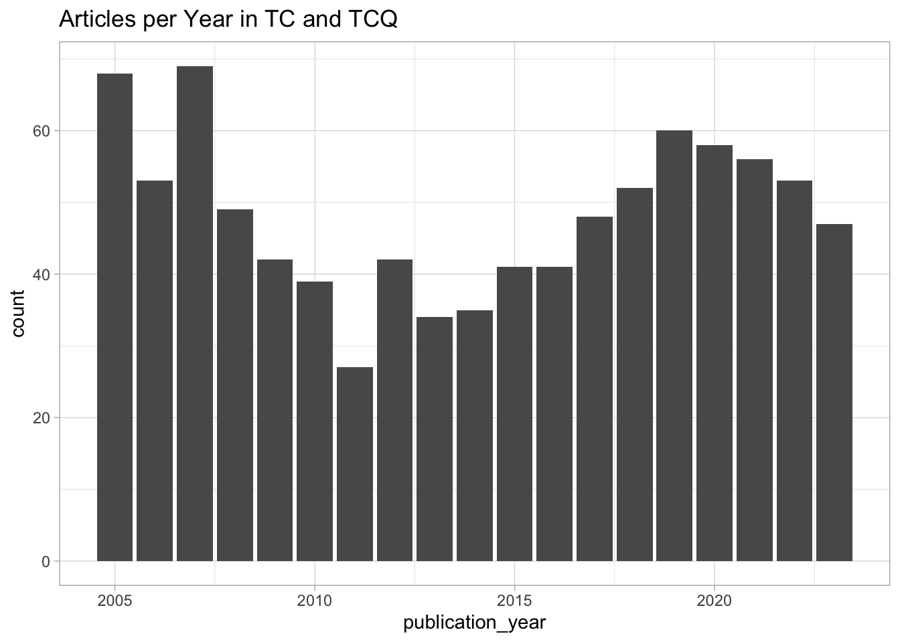
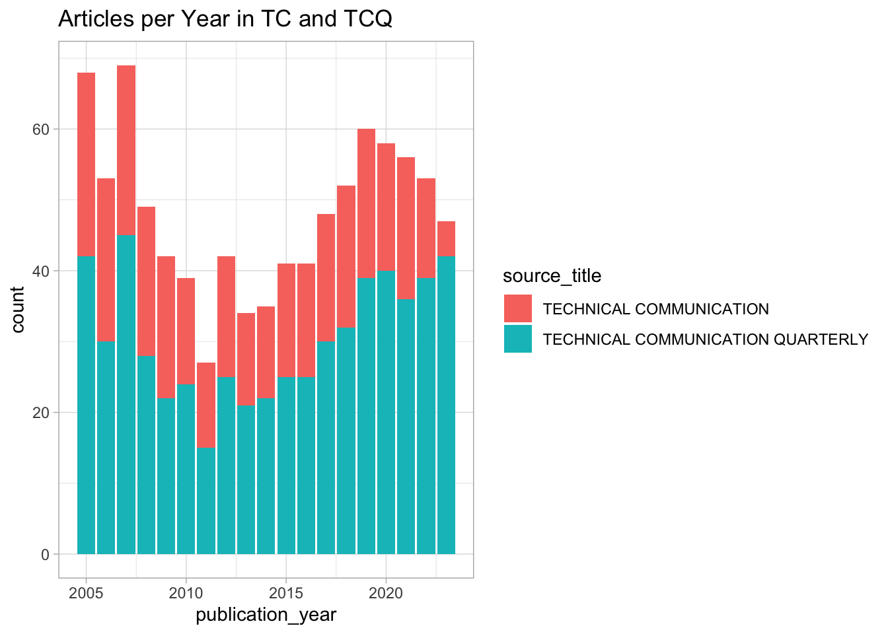
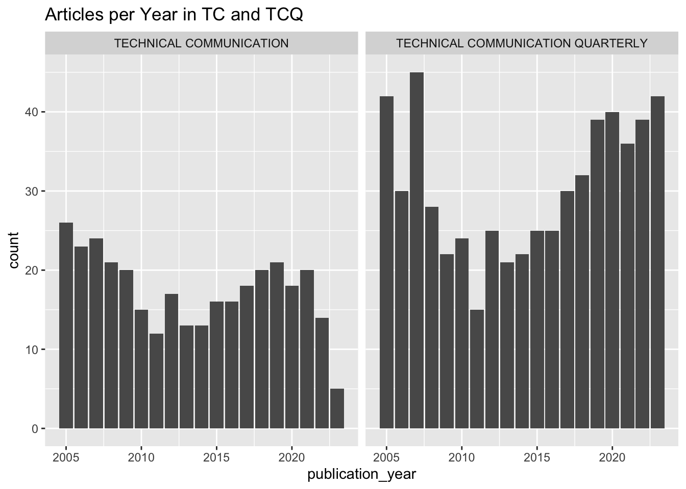
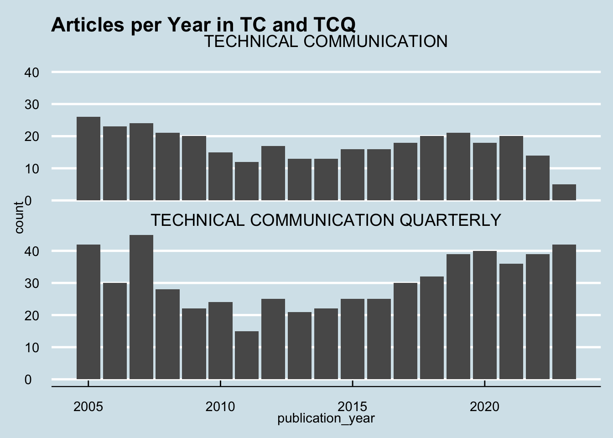
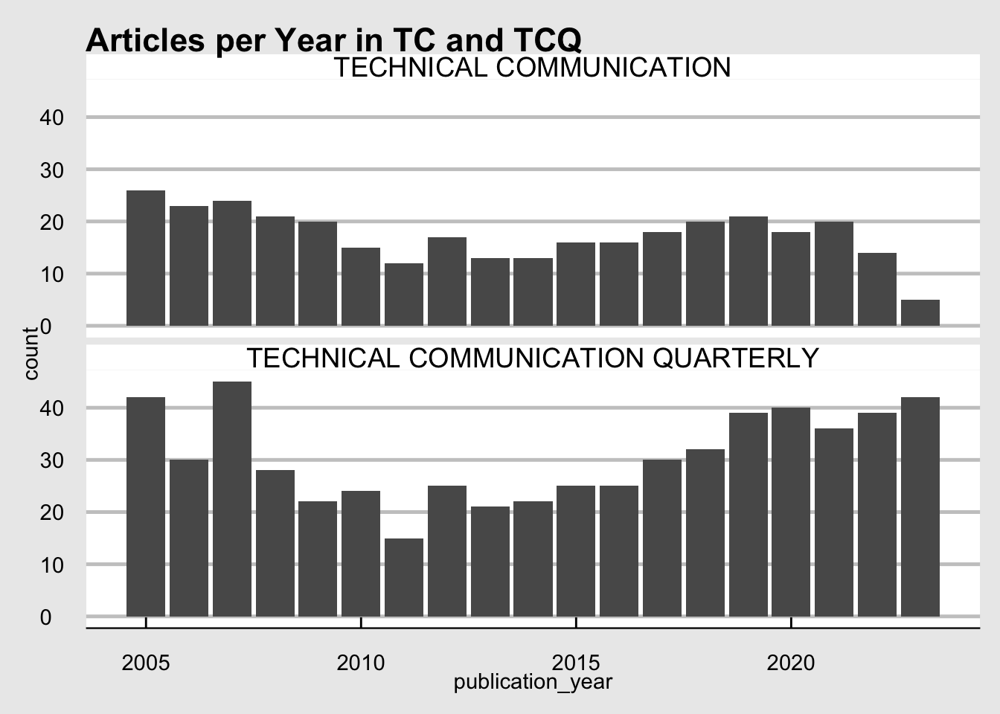
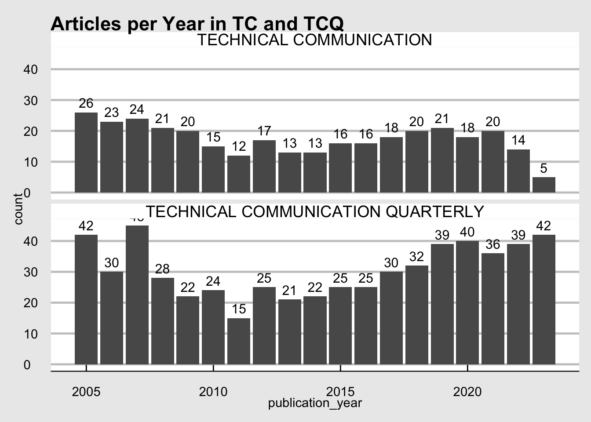
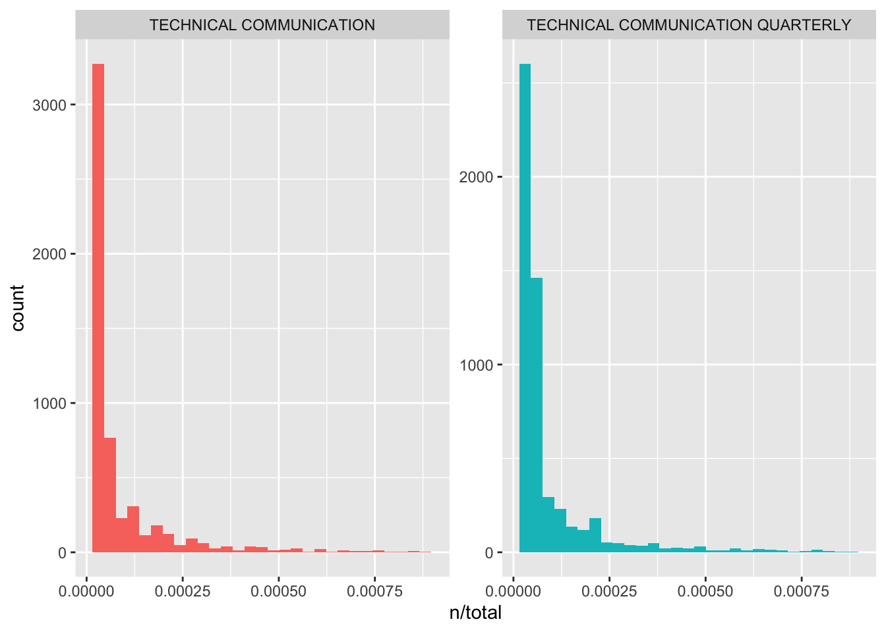

Exploring article metadata: TC and TCQ
Install packages and read in data
Our source data is split between two CSV files, one for the journal “Technical Communication Quarterly” and one for “Technical Communication.”
Data preparation
Let’s take a quick look at the data and clean up any issues. Some questions we might answer:
- How many rows and columns are in each dataset?
- What do the rows and columns correspond to?
Code
# shows dimensions (number of rows and columns)
dim(tcq_data_raw) [1] 582 22Code
dim(tc_data_raw)[1] 332 69Code
glimpse(tcq_data_raw)Rows: 582
Columns: 22
$ `Publication Type` <chr> "J", "J", "J", "J", "J", "J", "J", "J", "…
$ Authors <chr> "Fuglsby, BJ; Veeramoothoo, S", "Frost, E…
$ `Author Full Names` <chr> "Fuglsby, Brandi J.; Veeramoothoo, Saveen…
$ `Article Title` <chr> "Regulating Emotions for Social Action: E…
$ `Source Title` <chr> "TECHNICAL COMMUNICATION QUARTERLY", "TEC…
$ `Document Type` <chr> "Article", "Article", "Article", "Article…
$ Abstract <chr> "This article describes students' emotion…
$ `Cited References` <chr> "Agboka Godwin Y., 2018, CITIZENSHIP ADVO…
$ `Cited Reference Count` <dbl> 32, 86, 54, 28, 66, 22, 27, 38, 5, 20, 50…
$ `Times Cited, WoS Core` <dbl> 0, 0, 1, 7, 7, 10, 11, 8, 0, 0, 8, 0, 9, …
$ `Times Cited, All Databases` <dbl> 0, 0, 1, 7, 7, 10, 11, 8, 0, 0, 8, 0, 9, …
$ `Publication Date` <chr> "JAN 2", NA, NA, NA, NA, NA, NA, NA, NA, …
$ `Publication Year` <dbl> 2023, 2021, 2020, 2015, 2014, 2013, 2010,…
$ Volume <dbl> 32, 30, 29, 24, 23, 22, 19, 18, 14, 29, 2…
$ Issue <dbl> 1, 1, 2, 3, 3, 2, 3, 2, 1, 2, 4, 4, 1, 4,…
$ `Start Page` <chr> "98", "48", "136", "217", "184", "172", "…
$ `End Page` <chr> "113", "62", "154", "234", "206", "190", …
$ `Article Number` <dbl> NA, NA, NA, NA, NA, NA, NA, NA, NA, NA, N…
$ DOI <chr> "10.1080/10572252.2022.2079725", "10.1080…
$ `DOI Link` <chr> "http://dx.doi.org/10.1080/10572252.2022.…
$ `Early Access Date` <chr> "JUN 2022", NA, NA, NA, NA, NA, NA, NA, N…
$ `Web of Science Record` <chr> "View Full Record in Web of Science", "Vi…Code
glimpse(tc_data_raw)Rows: 332
Columns: 69
$ `Publication Type` <chr> "J", "J", "J", "J", "J", "J", "J", "J", "…
$ Authors <chr> "Britt, BC; Britt, RK", "Davis, C", "Colt…
$ `Author Full Names` <chr> "Britt, Brian C.; Britt, Rebecca K.", "Da…
$ `Book Author Full Names` <lgl> NA, NA, NA, NA, NA, NA, NA, NA, NA, NA, N…
$ `Group Authors` <lgl> NA, NA, NA, NA, NA, NA, NA, NA, NA, NA, N…
$ `Article Title` <chr> "The Roles of Medium and Narrative Believ…
$ `Source Title` <chr> "TECHNICAL COMMUNICATION", "TECHNICAL COM…
$ `Book Series Title` <lgl> NA, NA, NA, NA, NA, NA, NA, NA, NA, NA, N…
$ `Book Series Subtitle` <lgl> NA, NA, NA, NA, NA, NA, NA, NA, NA, NA, N…
$ Language <lgl> NA, NA, NA, NA, NA, NA, NA, NA, NA, NA, N…
$ `Document Type` <chr> "Article", "Article", "Article", "Article…
$ `Conference Title` <lgl> NA, NA, NA, NA, NA, NA, NA, NA, NA, NA, N…
$ `Conference Date` <lgl> NA, NA, NA, NA, NA, NA, NA, NA, NA, NA, N…
$ `Conference Location` <lgl> NA, NA, NA, NA, NA, NA, NA, NA, NA, NA, N…
$ `Conference Sponsor` <lgl> NA, NA, NA, NA, NA, NA, NA, NA, NA, NA, N…
$ `Conference Host` <lgl> NA, NA, NA, NA, NA, NA, NA, NA, NA, NA, N…
$ `Author Keywords` <lgl> NA, NA, NA, NA, NA, NA, NA, NA, NA, NA, N…
$ `Keywords Plus` <lgl> NA, NA, NA, NA, NA, NA, NA, NA, NA, NA, N…
$ Abstract <chr> "Purpose: This study investigates the rol…
$ Addresses <lgl> NA, NA, NA, NA, NA, NA, NA, NA, NA, NA, N…
$ Affiliations <lgl> NA, NA, NA, NA, NA, NA, NA, NA, NA, NA, N…
$ `Reprint Addresses` <lgl> NA, NA, NA, NA, NA, NA, NA, NA, NA, NA, N…
$ `Email Addresses` <lgl> NA, NA, NA, NA, NA, NA, NA, NA, NA, NA, N…
$ `Researcher Ids` <lgl> NA, NA, NA, NA, NA, NA, NA, NA, NA, NA, N…
$ ORCIDs <lgl> NA, NA, NA, NA, NA, NA, NA, NA, NA, NA, N…
$ `Funding Orgs` <lgl> NA, NA, NA, NA, NA, NA, NA, NA, NA, NA, N…
$ `Funding Name Preferred` <lgl> NA, NA, NA, NA, NA, NA, NA, NA, NA, NA, N…
$ `Funding Text` <lgl> NA, NA, NA, NA, NA, NA, NA, NA, NA, NA, N…
$ `Cited References` <lgl> NA, NA, NA, NA, NA, NA, NA, NA, NA, NA, N…
$ `Cited Reference Count` <dbl> 82, 24, 73, 46, 30, 28, 12, 20, 27, 24, 7…
$ `Times Cited, WoS Core` <dbl> 1, 0, 4, 10, 4, 11, 0, 2, 19, 3, 3, 3, 0,…
$ `Times Cited, All Databases` <dbl> 1, 0, 4, 10, 4, 11, 0, 2, 19, 3, 3, 3, 0,…
$ `180 Day Usage Count` <lgl> NA, NA, NA, NA, NA, NA, NA, NA, NA, NA, N…
$ `Since 2013 Usage Count` <lgl> NA, NA, NA, NA, NA, NA, NA, NA, NA, NA, N…
$ Publisher <lgl> NA, NA, NA, NA, NA, NA, NA, NA, NA, NA, N…
$ `Publisher City` <lgl> NA, NA, NA, NA, NA, NA, NA, NA, NA, NA, N…
$ `Publisher Address` <lgl> NA, NA, NA, NA, NA, NA, NA, NA, NA, NA, N…
$ ISSN <lgl> NA, NA, NA, NA, NA, NA, NA, NA, NA, NA, N…
$ eISSN <lgl> NA, NA, NA, NA, NA, NA, NA, NA, NA, NA, N…
$ ISBN <lgl> NA, NA, NA, NA, NA, NA, NA, NA, NA, NA, N…
$ `Journal Abbreviation` <lgl> NA, NA, NA, NA, NA, NA, NA, NA, NA, NA, N…
$ `Journal ISO Abbreviation` <lgl> NA, NA, NA, NA, NA, NA, NA, NA, NA, NA, N…
$ `Publication Date` <chr> "AUG", "AUG", "FEB", "AUG", "NOV", "FEB",…
$ `Publication Year` <dbl> 2021, 2019, 2019, 2018, 2014, 2012, 2011,…
$ Volume <dbl> 68, 66, 66, 65, 61, 59, 58, 54, 54, 54, 6…
$ Issue <dbl> 3, 3, 1, 3, 4, 1, 4, 4, 3, 1, 4, 3, 3, 1,…
$ `Part Number` <lgl> NA, NA, NA, NA, NA, NA, NA, NA, NA, NA, N…
$ Supplement <lgl> NA, NA, NA, NA, NA, NA, NA, NA, NA, NA, N…
$ `Special Issue` <chr> NA, NA, NA, NA, NA, NA, NA, NA, NA, NA, N…
$ `Meeting Abstract` <lgl> NA, NA, NA, NA, NA, NA, NA, NA, NA, NA, N…
$ `Start Page` <chr> "76", "272", "53", "293", "215", "1", "11…
$ `End Page` <chr> "96", "283", "67", "308", "231", "7", "13…
$ `Article Number` <lgl> NA, NA, NA, NA, NA, NA, NA, NA, NA, NA, N…
$ DOI <chr> NA, NA, NA, NA, NA, NA, NA, NA, NA, NA, N…
$ `DOI Link` <chr> NA, NA, NA, NA, NA, NA, NA, NA, NA, NA, N…
$ `Book DOI` <lgl> NA, NA, NA, NA, NA, NA, NA, NA, NA, NA, N…
$ `Early Access Date` <lgl> NA, NA, NA, NA, NA, NA, NA, NA, NA, NA, N…
$ `Number of Pages` <lgl> NA, NA, NA, NA, NA, NA, NA, NA, NA, NA, N…
$ `WoS Categories` <lgl> NA, NA, NA, NA, NA, NA, NA, NA, NA, NA, N…
$ `Web of Science Index` <lgl> NA, NA, NA, NA, NA, NA, NA, NA, NA, NA, N…
$ `Research Areas` <lgl> NA, NA, NA, NA, NA, NA, NA, NA, NA, NA, N…
$ `IDS Number` <lgl> NA, NA, NA, NA, NA, NA, NA, NA, NA, NA, N…
$ `Pubmed Id` <lgl> NA, NA, NA, NA, NA, NA, NA, NA, NA, NA, N…
$ `Open Access Designations` <lgl> NA, NA, NA, NA, NA, NA, NA, NA, NA, NA, N…
$ `Highly Cited Status` <lgl> NA, NA, NA, NA, NA, NA, NA, NA, NA, NA, N…
$ `Hot Paper Status` <lgl> NA, NA, NA, NA, NA, NA, NA, NA, NA, NA, N…
$ `Date of Export` <lgl> NA, NA, NA, NA, NA, NA, NA, NA, NA, NA, N…
$ `UT (Unique WOS ID)` <lgl> NA, NA, NA, NA, NA, NA, NA, NA, NA, NA, N…
$ `Web of Science Record` <chr> "View Full Record in Web of Science", "Vi…Cleaning names
We’ll start by cleaning up the names with the janitor package. The convention is lowercase and joined by underscores.
Code
#install.packages("janitor")
library(janitor)
# use help("library_name") for a description
help("janitor")
# Syntax method 1 (on TCQ)
tcq_data_raw <- clean_names(tcq_data_raw)
glimpse(tcq_data_raw)Rows: 582
Columns: 22
$ publication_type <chr> "J", "J", "J", "J", "J", "J", "J", "J", "J",…
$ authors <chr> "Fuglsby, BJ; Veeramoothoo, S", "Frost, EA",…
$ author_full_names <chr> "Fuglsby, Brandi J.; Veeramoothoo, Saveena (…
$ article_title <chr> "Regulating Emotions for Social Action: Emot…
$ source_title <chr> "TECHNICAL COMMUNICATION QUARTERLY", "TECHNI…
$ document_type <chr> "Article", "Article", "Article", "Article", …
$ abstract <chr> "This article describes students' emotional …
$ cited_references <chr> "Agboka Godwin Y., 2018, CITIZENSHIP ADVOCAC…
$ cited_reference_count <dbl> 32, 86, 54, 28, 66, 22, 27, 38, 5, 20, 50, 4…
$ times_cited_wo_s_core <dbl> 0, 0, 1, 7, 7, 10, 11, 8, 0, 0, 8, 0, 9, 0, …
$ times_cited_all_databases <dbl> 0, 0, 1, 7, 7, 10, 11, 8, 0, 0, 8, 0, 9, 0, …
$ publication_date <chr> "JAN 2", NA, NA, NA, NA, NA, NA, NA, NA, NA,…
$ publication_year <dbl> 2023, 2021, 2020, 2015, 2014, 2013, 2010, 20…
$ volume <dbl> 32, 30, 29, 24, 23, 22, 19, 18, 14, 29, 28, …
$ issue <dbl> 1, 1, 2, 3, 3, 2, 3, 2, 1, 2, 4, 4, 1, 4, 2,…
$ start_page <chr> "98", "48", "136", "217", "184", "172", "300…
$ end_page <chr> "113", "62", "154", "234", "206", "190", "31…
$ article_number <dbl> NA, NA, NA, NA, NA, NA, NA, NA, NA, NA, NA, …
$ doi <chr> "10.1080/10572252.2022.2079725", "10.1080/10…
$ doi_link <chr> "http://dx.doi.org/10.1080/10572252.2022.207…
$ early_access_date <chr> "JUN 2022", NA, NA, NA, NA, NA, NA, NA, NA, …
$ web_of_science_record <chr> "View Full Record in Web of Science", "View …Code
# Syntax method 2 (on TC)
tc_data_raw <- tc_data_raw %>%
clean_names()
glimpse(tc_data_raw)Rows: 332
Columns: 69
$ publication_type <chr> "J", "J", "J", "J", "J", "J", "J", "J", "J",…
$ authors <chr> "Britt, BC; Britt, RK", "Davis, C", "Colton,…
$ author_full_names <chr> "Britt, Brian C.; Britt, Rebecca K.", "Davis…
$ book_author_full_names <lgl> NA, NA, NA, NA, NA, NA, NA, NA, NA, NA, NA, …
$ group_authors <lgl> NA, NA, NA, NA, NA, NA, NA, NA, NA, NA, NA, …
$ article_title <chr> "The Roles of Medium and Narrative Believabi…
$ source_title <chr> "TECHNICAL COMMUNICATION", "TECHNICAL COMMUN…
$ book_series_title <lgl> NA, NA, NA, NA, NA, NA, NA, NA, NA, NA, NA, …
$ book_series_subtitle <lgl> NA, NA, NA, NA, NA, NA, NA, NA, NA, NA, NA, …
$ language <lgl> NA, NA, NA, NA, NA, NA, NA, NA, NA, NA, NA, …
$ document_type <chr> "Article", "Article", "Article", "Article", …
$ conference_title <lgl> NA, NA, NA, NA, NA, NA, NA, NA, NA, NA, NA, …
$ conference_date <lgl> NA, NA, NA, NA, NA, NA, NA, NA, NA, NA, NA, …
$ conference_location <lgl> NA, NA, NA, NA, NA, NA, NA, NA, NA, NA, NA, …
$ conference_sponsor <lgl> NA, NA, NA, NA, NA, NA, NA, NA, NA, NA, NA, …
$ conference_host <lgl> NA, NA, NA, NA, NA, NA, NA, NA, NA, NA, NA, …
$ author_keywords <lgl> NA, NA, NA, NA, NA, NA, NA, NA, NA, NA, NA, …
$ keywords_plus <lgl> NA, NA, NA, NA, NA, NA, NA, NA, NA, NA, NA, …
$ abstract <chr> "Purpose: This study investigates the role o…
$ addresses <lgl> NA, NA, NA, NA, NA, NA, NA, NA, NA, NA, NA, …
$ affiliations <lgl> NA, NA, NA, NA, NA, NA, NA, NA, NA, NA, NA, …
$ reprint_addresses <lgl> NA, NA, NA, NA, NA, NA, NA, NA, NA, NA, NA, …
$ email_addresses <lgl> NA, NA, NA, NA, NA, NA, NA, NA, NA, NA, NA, …
$ researcher_ids <lgl> NA, NA, NA, NA, NA, NA, NA, NA, NA, NA, NA, …
$ orci_ds <lgl> NA, NA, NA, NA, NA, NA, NA, NA, NA, NA, NA, …
$ funding_orgs <lgl> NA, NA, NA, NA, NA, NA, NA, NA, NA, NA, NA, …
$ funding_name_preferred <lgl> NA, NA, NA, NA, NA, NA, NA, NA, NA, NA, NA, …
$ funding_text <lgl> NA, NA, NA, NA, NA, NA, NA, NA, NA, NA, NA, …
$ cited_references <lgl> NA, NA, NA, NA, NA, NA, NA, NA, NA, NA, NA, …
$ cited_reference_count <dbl> 82, 24, 73, 46, 30, 28, 12, 20, 27, 24, 72, …
$ times_cited_wo_s_core <dbl> 1, 0, 4, 10, 4, 11, 0, 2, 19, 3, 3, 3, 0, 4,…
$ times_cited_all_databases <dbl> 1, 0, 4, 10, 4, 11, 0, 2, 19, 3, 3, 3, 0, 4,…
$ x180_day_usage_count <lgl> NA, NA, NA, NA, NA, NA, NA, NA, NA, NA, NA, …
$ since_2013_usage_count <lgl> NA, NA, NA, NA, NA, NA, NA, NA, NA, NA, NA, …
$ publisher <lgl> NA, NA, NA, NA, NA, NA, NA, NA, NA, NA, NA, …
$ publisher_city <lgl> NA, NA, NA, NA, NA, NA, NA, NA, NA, NA, NA, …
$ publisher_address <lgl> NA, NA, NA, NA, NA, NA, NA, NA, NA, NA, NA, …
$ issn <lgl> NA, NA, NA, NA, NA, NA, NA, NA, NA, NA, NA, …
$ e_issn <lgl> NA, NA, NA, NA, NA, NA, NA, NA, NA, NA, NA, …
$ isbn <lgl> NA, NA, NA, NA, NA, NA, NA, NA, NA, NA, NA, …
$ journal_abbreviation <lgl> NA, NA, NA, NA, NA, NA, NA, NA, NA, NA, NA, …
$ journal_iso_abbreviation <lgl> NA, NA, NA, NA, NA, NA, NA, NA, NA, NA, NA, …
$ publication_date <chr> "AUG", "AUG", "FEB", "AUG", "NOV", "FEB", "N…
$ publication_year <dbl> 2021, 2019, 2019, 2018, 2014, 2012, 2011, 20…
$ volume <dbl> 68, 66, 66, 65, 61, 59, 58, 54, 54, 54, 68, …
$ issue <dbl> 3, 3, 1, 3, 4, 1, 4, 4, 3, 1, 4, 3, 3, 1, 2,…
$ part_number <lgl> NA, NA, NA, NA, NA, NA, NA, NA, NA, NA, NA, …
$ supplement <lgl> NA, NA, NA, NA, NA, NA, NA, NA, NA, NA, NA, …
$ special_issue <chr> NA, NA, NA, NA, NA, NA, NA, NA, NA, NA, NA, …
$ meeting_abstract <lgl> NA, NA, NA, NA, NA, NA, NA, NA, NA, NA, NA, …
$ start_page <chr> "76", "272", "53", "293", "215", "1", "11", …
$ end_page <chr> "96", "283", "67", "308", "231", "7", "13", …
$ article_number <lgl> NA, NA, NA, NA, NA, NA, NA, NA, NA, NA, NA, …
$ doi <chr> NA, NA, NA, NA, NA, NA, NA, NA, NA, NA, NA, …
$ doi_link <chr> NA, NA, NA, NA, NA, NA, NA, NA, NA, NA, NA, …
$ book_doi <lgl> NA, NA, NA, NA, NA, NA, NA, NA, NA, NA, NA, …
$ early_access_date <lgl> NA, NA, NA, NA, NA, NA, NA, NA, NA, NA, NA, …
$ number_of_pages <lgl> NA, NA, NA, NA, NA, NA, NA, NA, NA, NA, NA, …
$ wo_s_categories <lgl> NA, NA, NA, NA, NA, NA, NA, NA, NA, NA, NA, …
$ web_of_science_index <lgl> NA, NA, NA, NA, NA, NA, NA, NA, NA, NA, NA, …
$ research_areas <lgl> NA, NA, NA, NA, NA, NA, NA, NA, NA, NA, NA, …
$ ids_number <lgl> NA, NA, NA, NA, NA, NA, NA, NA, NA, NA, NA, …
$ pubmed_id <lgl> NA, NA, NA, NA, NA, NA, NA, NA, NA, NA, NA, …
$ open_access_designations <lgl> NA, NA, NA, NA, NA, NA, NA, NA, NA, NA, NA, …
$ highly_cited_status <lgl> NA, NA, NA, NA, NA, NA, NA, NA, NA, NA, NA, …
$ hot_paper_status <lgl> NA, NA, NA, NA, NA, NA, NA, NA, NA, NA, NA, …
$ date_of_export <lgl> NA, NA, NA, NA, NA, NA, NA, NA, NA, NA, NA, …
$ ut_unique_wos_id <lgl> NA, NA, NA, NA, NA, NA, NA, NA, NA, NA, NA, …
$ web_of_science_record <chr> "View Full Record in Web of Science", "View …Select columns of interest
Now we’ll use a function from a library called dplyr to retain only the columns we want. Let’s keep:
- author_full_names
- article_title
- source_title
- abstract
- cited_references
- cited_reference_count
- publication_year
- publication_type
First on TCQ
Code
Rows: 582
Columns: 8
$ author_full_names <chr> "Fuglsby, Brandi J.; Veeramoothoo, Saveena (Chak…
$ article_title <chr> "Regulating Emotions for Social Action: Emotiona…
$ source_title <chr> "TECHNICAL COMMUNICATION QUARTERLY", "TECHNICAL …
$ abstract <chr> "This article describes students' emotional inte…
$ cited_references <chr> "Agboka Godwin Y., 2018, CITIZENSHIP ADVOCACY; […
$ cited_reference_count <dbl> 32, 86, 54, 28, 66, 22, 27, 38, 5, 20, 50, 4, 55…
$ publication_year <dbl> 2023, 2021, 2020, 2015, 2014, 2013, 2010, 2009, …
$ publication_type <chr> "J", "J", "J", "J", "J", "J", "J", "J", "J", "J"…Now on TC
Code
Rows: 332
Columns: 8
$ author_full_names <chr> "Britt, Brian C.; Britt, Rebecca K.", "Davis, Ca…
$ article_title <chr> "The Roles of Medium and Narrative Believability…
$ source_title <chr> "TECHNICAL COMMUNICATION", "TECHNICAL COMMUNICAT…
$ abstract <chr> "Purpose: This study investigates the role of ne…
$ cited_references <lgl> NA, NA, NA, NA, NA, NA, NA, NA, NA, NA, NA, NA, …
$ cited_reference_count <dbl> 82, 24, 73, 46, 30, 28, 12, 20, 27, 24, 72, 34, …
$ publication_year <dbl> 2021, 2019, 2019, 2018, 2014, 2012, 2011, 2007, …
$ publication_type <chr> "J", "J", "J", "J", "J", "J", "J", "J", "J", "J"…Combine the two sets
Exploring the data
Some quick ways to examine at a high level
Code
# provides overview of numeric variables
summary(both_data) author_full_names article_title source_title abstract
Length:914 Length:914 Length:914 Length:914
Class :character Class :character Class :character Class :character
Mode :character Mode :character Mode :character Mode :character
cited_references cited_reference_count publication_year publication_type
Length:914 Min. : 0.00 Min. :2005 Length:914
Class :character 1st Qu.: 18.00 1st Qu.:2008 Class :character
Mode :character Median : 34.00 Median :2014 Mode :character
Mean : 35.59 Mean :2014
3rd Qu.: 51.00 3rd Qu.:2019
Max. :169.00 Max. :2023 Code
# overview of target column
summary(both_data$publication_year) Min. 1st Qu. Median Mean 3rd Qu. Max.
2005 2008 2014 2014 2019 2023 Code
# for each column, shows data types and first few observations
str(both_data) tibble [914 × 8] (S3: tbl_df/tbl/data.frame)
$ author_full_names : chr [1:914] "Fuglsby, Brandi J.; Veeramoothoo, Saveena (Chakrika)" "Frost, Erin A." "Weber, Ryan" "Kreuter, Nate" ...
$ article_title : chr [1:914] "Regulating Emotions for Social Action: Emotional Intelligence's Role in TPC" "Ultrasound, Gender, and Consent: An Apparent Feminist Analysis of Medical Imaging Rhetorics" "The News from Mars" "The US Intelligence Community's Mathematical Ideology of Technical Communication" ...
$ source_title : chr [1:914] "TECHNICAL COMMUNICATION QUARTERLY" "TECHNICAL COMMUNICATION QUARTERLY" "TECHNICAL COMMUNICATION QUARTERLY" "TECHNICAL COMMUNICATION QUARTERLY" ...
$ abstract : chr [1:914] "This article describes students' emotional intelligence (EI) development when participating in the Trans-Atlant"| __truncated__ "This article uses an apparent feminist approach to engage a two-part research question: First, does gender affe"| __truncated__ "Bruno Latour advocates for portrayals of science in the making but does not explain how the public can access t"| __truncated__ "Reading historical intelligence community documents primarily through the lens of Kenneth Burke's essay ''Seman"| __truncated__ ...
$ cited_references : chr [1:914] "Agboka Godwin Y., 2018, CITIZENSHIP ADVOCACY; [Anonymous], 2007, SOCIAL JUSTICE THEOR; [Anonymous], 2020, T ATL"| __truncated__ "American Cancer Society, 2019, REC PROST CANC EARL; American College of Obstetricians and Gynecologists, 2019, "| __truncated__ "[Anonymous], 2007, J TECH WRIT COMMUN, DOI DOI 10.2190/TW.37.3.C; [Anonymous], 2001, WHAT SHOULD WE TEACH; [Ano"| __truncated__ "[Anonymous], 2005, REP PRES US; Barnard I, 2010, COLL COMPOS COMMUN, V61, P434; Best J., 2001, DAMNED LIES STAT"| __truncated__ ...
$ cited_reference_count: num [1:914] 32 86 54 28 66 22 27 38 5 20 ...
$ publication_year : num [1:914] 2023 2021 2020 2015 2014 ...
$ publication_type : chr [1:914] "J" "J" "J" "J" ...Code
# shows first few rows
head(both_data)# A tibble: 6 × 8
author_full_names article_title source_title abstract cited_references
<chr> <chr> <chr> <chr> <chr>
1 Fuglsby, Brandi J.; Veer… Regulating E… TECHNICAL C… This ar… Agboka Godwin Y…
2 Frost, Erin A. Ultrasound, … TECHNICAL C… This ar… American Cancer…
3 Weber, Ryan The News fro… TECHNICAL C… Bruno L… [Anonymous], 20…
4 Kreuter, Nate The US Intel… TECHNICAL C… Reading… [Anonymous], 20…
5 Buehl, Jonathan Toward an Et… TECHNICAL C… Over th… ANDERSON C, 199…
6 Lauer, Claire Examining th… TECHNICAL C… This ar… [Anonymous], SE…
# ℹ 3 more variables: cited_reference_count <dbl>, publication_year <dbl>,
# publication_type <chr>Code
# shows the first n rows
head(both_data, n = 10)# A tibble: 10 × 8
author_full_names article_title source_title abstract cited_references
<chr> <chr> <chr> <chr> <chr>
1 Fuglsby, Brandi J.; Vee… Regulating E… TECHNICAL C… This ar… Agboka Godwin Y…
2 Frost, Erin A. Ultrasound, … TECHNICAL C… This ar… American Cancer…
3 Weber, Ryan The News fro… TECHNICAL C… Bruno L… [Anonymous], 20…
4 Kreuter, Nate The US Intel… TECHNICAL C… Reading… [Anonymous], 20…
5 Buehl, Jonathan Toward an Et… TECHNICAL C… Over th… ANDERSON C, 199…
6 Lauer, Claire Examining th… TECHNICAL C… This ar… [Anonymous], SE…
7 Ding, Huiling Technical Co… TECHNICAL C… In this… [Anonymous], 20…
8 Kynell, Teresa; Tebeaux… The Associat… TECHNICAL C… This ar… Anderson P., 19…
9 Kitalong, Karla Saari Working with… TECHNICAL C… <NA> ALLEN N, 2002, …
10 Pihlaja, Beau Rhetoric, Te… TECHNICAL C… <NA> Agboka Godwin, …
# ℹ 3 more variables: cited_reference_count <dbl>, publication_year <dbl>,
# publication_type <chr>Code
#shows last few rows
tail(both_data)# A tibble: 6 × 8
author_full_names article_title source_title abstract cited_references
<chr> <chr> <chr> <chr> <chr>
1 Wagner, Christian; Schro… Capabilities… TECHNICAL C… Purpose… <NA>
2 Lentz, Leo; De Jong, Men… How Do Exper… TECHNICAL C… Discuss… <NA>
3 Rife, Martine Courant Technical co… TECHNICAL C… Maintai… <NA>
4 Mott, Richard K.; Ford, … The converge… TECHNICAL C… States … <NA>
5 Thrush, Emily A.; Hooper… Industry and… TECHNICAL C… Details… <NA>
6 Theofanos, MF; Redish, J Helping low-… TECHNICAL C… This is… <NA>
# ℹ 3 more variables: cited_reference_count <dbl>, publication_year <dbl>,
# publication_type <chr>Code
# creates a frequency table for a categorical variable
table(both_data$publication_year)
2005 2006 2007 2008 2009 2010 2011 2012 2013 2014 2015 2016 2017 2018 2019 2020
68 53 69 49 42 39 27 42 34 35 41 41 48 52 60 58
2021 2022 2023
56 53 47 Visualize
Let’s create some exploratory visualizations.
Visualize the articles published by year
Code
# count of articles by year
ggplot(both_data, aes(x = publication_year)) +
geom_bar() +
labs(title = "Articles per Year in TC and TCQ",
X = "Publication Year",
Y = "Number of Articles") +
theme_light()
Add another variable to the display
Code
# count of articles by year, by journal
ggplot(both_data, aes(x = publication_year, fill = source_title)) +
geom_bar() +
labs(title = "Articles per Year in TC and TCQ",
X = "Publication Year",
Y = "Number of Articles") +
theme_light()
Create two displays using facet wrap
Code
# count of articles by year, by journal
ggplot(both_data, aes(x = publication_year)) +
geom_bar() +
labs(title = "Articles per Year in TC and TCQ",
X = "Publication Year",
Y = "Number of Articles") +
facet_wrap(~ source_title, ncol = 2) # Change ncol as needed
Spice things up with a theme from ggthemes
Check out this ggthemes gallery
Code
#install.packages("ggthemes")
library(ggthemes)
# count of articles by year, by journal
ggplot(both_data, aes(x = publication_year)) +
geom_bar() +
labs(title = "Articles per Year in TC and TCQ",
X = "Publication Year",
Y = "Number of Articles") +
facet_wrap(~ source_title, ncol = 1) +
theme_economist()
Code
# count of articles by year, by journal
year_plot <- ggplot(both_data, aes(x = publication_year)) +
geom_bar() +
labs(title = "Articles per Year in TC and TCQ",
X = "Publication Year",
Y = "Number of Articles") +
facet_wrap(~ source_title, ncol = 1) +
theme_economist_white()
year_plot
Add labels above the bars
Code
# add labels above the bars
year_plot <- year_plot +
geom_text(stat = 'count', aes(label = after_stat(count)), vjust = -0.5, size = 4)
year_plot
Save the chart
Save our dataset
Analyzing text columns
Let’s do some analysis on the article_title and abstract columns
View the text data
Code
head(both_data$article_title)[1] "Regulating Emotions for Social Action: Emotional Intelligence's Role in TPC"
[2] "Ultrasound, Gender, and Consent: An Apparent Feminist Analysis of Medical Imaging Rhetorics"
[3] "The News from Mars"
[4] "The US Intelligence Community's Mathematical Ideology of Technical Communication"
[5] "Toward an Ethical Rhetoric of the Digital Scientific Image: Learning From the Era When Science Met Photoshop"
[6] "Examining the Effect of Reflective Assessment on the Quality of Visual Design Assignments in the Technical Writing Classroom"Code
head(both_data$abstract)[1] "This article describes students' emotional intelligence (EI) development when participating in the Trans-Atlantic and Pacific Project (TAPP) in two technical and professional communication (TPC) courses. The researchers used modified grounded theory to compile the emotions used for coding students' weekly reflections, and content analyzed how the TAPP experience affected students' EI development. Overall, the article emphasizes the importance of supporting TPC students' EI development in low-stakes environments since EI directly impacted their actions when collaborating."
[2] "This article uses an apparent feminist approach to engage a two-part research question: First, does gender affect the frequency with which people become subjects of medical digital imaging? Second, how do the subjects of medical digital imaging become persuaded to accept this role? Engaging with medical imaging and the technical communication surrounding it as an assemblage of technical rhetorics (Frost & Eble) and thus a technology, this project shows that women are more commonly scanned as a result of social biases. Further, this article argues that the ubiquity of scanning of women's bodies has implications for political agency and privacy and for technical communicators' understandings of efficiency. This study is preliminary but presents compelling evidence that further research on the technical communication surrounding gender and medical imaging is necessary."
[3] "Bruno Latour advocates for portrayals of science in the making but does not explain how the public can access these portrayals. This article addresses that gap by analyzing how 199 press releases from NASA's Curiosity mission depict science. Results indicate that the releases often cover Curiosity's tools and activities, occasionally feature scientists at work, and rarely mention controversies. Ultimately, these press releases provide the public an engaging but partial perspective on science in the making."
[4] "Reading historical intelligence community documents primarily through the lens of Kenneth Burke's essay ''Semantic and Poetic Meaning,'' this article explores the history and stakes of the intelligence community's ongoing commitment to a problematic model of language use. The essay argues that the intelligence community's pursuit of a ''mathematical'' ideology of language is an attempt to render language ''neutral'' and to divorce rhetoric from ethics in ways that Burke anticipated, and with negative consequences for the generation of written intelligence reports and national policy decisions."
[5] "Over the past two decades, scientific editors have attempted to correct mistaken'' assumptions about scientific images and to curb unethical image-manipulation practices. Reactions to the advent and abuse of image-adjustment software (such as Adobe Photoshop) reveal the complex relations among visual representations, scientific credibility, and epistemic rhetoric. Perelman and OlbrechtsTyteca's model of argumentation provides a flexible system for understanding these relations and for teaching students to use scientific images ethically and effectively."
[6] "This article examines the role that reflective assessment plays in contributing to the quality of students' visual designs. Students who are required to account for their rhetorical decisions in the design of a document benefit from the practice of verbalizing those decisions. However, this study shows that students who engage in reflective assessment actually produce stronger visual designs as well. This effect should help determine the extent to which such assessments should be included in the classroom." Create a title_abstract column
Code
[1] "Regulating Emotions for Social Action: Emotional Intelligence's Role in TPC ~ This article describes students' emotional intelligence (EI) development when participating in the Trans-Atlantic and Pacific Project (TAPP) in two technical and professional communication (TPC) courses. The researchers used modified grounded theory to compile the emotions used for coding students' weekly reflections, and content analyzed how the TAPP experience affected students' EI development. Overall, the article emphasizes the importance of supporting TPC students' EI development in low-stakes environments since EI directly impacted their actions when collaborating."
[2] "Ultrasound, Gender, and Consent: An Apparent Feminist Analysis of Medical Imaging Rhetorics ~ This article uses an apparent feminist approach to engage a two-part research question: First, does gender affect the frequency with which people become subjects of medical digital imaging? Second, how do the subjects of medical digital imaging become persuaded to accept this role? Engaging with medical imaging and the technical communication surrounding it as an assemblage of technical rhetorics (Frost & Eble) and thus a technology, this project shows that women are more commonly scanned as a result of social biases. Further, this article argues that the ubiquity of scanning of women's bodies has implications for political agency and privacy and for technical communicators' understandings of efficiency. This study is preliminary but presents compelling evidence that further research on the technical communication surrounding gender and medical imaging is necessary."
[3] "The News from Mars ~ Bruno Latour advocates for portrayals of science in the making but does not explain how the public can access these portrayals. This article addresses that gap by analyzing how 199 press releases from NASA's Curiosity mission depict science. Results indicate that the releases often cover Curiosity's tools and activities, occasionally feature scientists at work, and rarely mention controversies. Ultimately, these press releases provide the public an engaging but partial perspective on science in the making."
[4] "The US Intelligence Community's Mathematical Ideology of Technical Communication ~ Reading historical intelligence community documents primarily through the lens of Kenneth Burke's essay ''Semantic and Poetic Meaning,'' this article explores the history and stakes of the intelligence community's ongoing commitment to a problematic model of language use. The essay argues that the intelligence community's pursuit of a ''mathematical'' ideology of language is an attempt to render language ''neutral'' and to divorce rhetoric from ethics in ways that Burke anticipated, and with negative consequences for the generation of written intelligence reports and national policy decisions."
[5] "Toward an Ethical Rhetoric of the Digital Scientific Image: Learning From the Era When Science Met Photoshop ~ Over the past two decades, scientific editors have attempted to correct mistaken'' assumptions about scientific images and to curb unethical image-manipulation practices. Reactions to the advent and abuse of image-adjustment software (such as Adobe Photoshop) reveal the complex relations among visual representations, scientific credibility, and epistemic rhetoric. Perelman and OlbrechtsTyteca's model of argumentation provides a flexible system for understanding these relations and for teaching students to use scientific images ethically and effectively."
[6] "Examining the Effect of Reflective Assessment on the Quality of Visual Design Assignments in the Technical Writing Classroom ~ This article examines the role that reflective assessment plays in contributing to the quality of students' visual designs. Students who are required to account for their rhetorical decisions in the design of a document benefit from the practice of verbalizing those decisions. However, this study shows that students who engage in reflective assessment actually produce stronger visual designs as well. This effect should help determine the extent to which such assessments should be included in the classroom." Using tidytext to analyze word distribution
We’ll create a new dataframe in which each word-year pairing gets it’s own row
Code
# A tibble: 15 × 3
source_title word n
<chr> <chr> <int>
1 TECHNICAL COMMUNICATION the 2504
2 TECHNICAL COMMUNICATION and 2269
3 TECHNICAL COMMUNICATION of 2000
4 TECHNICAL COMMUNICATION QUARTERLY the 1873
5 TECHNICAL COMMUNICATION QUARTERLY and 1755
6 TECHNICAL COMMUNICATION QUARTERLY of 1566
7 TECHNICAL COMMUNICATION to 1405
8 TECHNICAL COMMUNICATION a 1187
9 TECHNICAL COMMUNICATION in 1159
10 TECHNICAL COMMUNICATION QUARTERLY in 1042
11 TECHNICAL COMMUNICATION QUARTERLY to 953
12 TECHNICAL COMMUNICATION QUARTERLY a 850
13 TECHNICAL COMMUNICATION technical 717
14 TECHNICAL COMMUNICATION for 659
15 TECHNICAL COMMUNICATION that 575Now we’ll get the total word count for each source
Code
# A tibble: 2 × 2
source_title total
<chr> <int>
1 TECHNICAL COMMUNICATION 53475
2 TECHNICAL COMMUNICATION QUARTERLY 39986Use join to add the total words by source as a new column to the source-specific word counts
# A tibble: 20 × 4
source_title word n total
<chr> <chr> <int> <int>
1 TECHNICAL COMMUNICATION the 2504 53475
2 TECHNICAL COMMUNICATION and 2269 53475
3 TECHNICAL COMMUNICATION of 2000 53475
4 TECHNICAL COMMUNICATION QUARTERLY the 1873 39986
5 TECHNICAL COMMUNICATION QUARTERLY and 1755 39986
6 TECHNICAL COMMUNICATION QUARTERLY of 1566 39986
7 TECHNICAL COMMUNICATION to 1405 53475
8 TECHNICAL COMMUNICATION a 1187 53475
9 TECHNICAL COMMUNICATION in 1159 53475
10 TECHNICAL COMMUNICATION QUARTERLY in 1042 39986
11 TECHNICAL COMMUNICATION QUARTERLY to 953 39986
12 TECHNICAL COMMUNICATION QUARTERLY a 850 39986
13 TECHNICAL COMMUNICATION technical 717 53475
14 TECHNICAL COMMUNICATION for 659 53475
15 TECHNICAL COMMUNICATION that 575 53475
16 TECHNICAL COMMUNICATION QUARTERLY technical 561 39986
17 TECHNICAL COMMUNICATION QUARTERLY for 535 39986
18 TECHNICAL COMMUNICATION QUARTERLY communication 534 39986
19 TECHNICAL COMMUNICATION QUARTERLY this 516 39986
20 TECHNICAL COMMUNICATION communication 512 53475Code
tail(ta_words_year, n = 20)# A tibble: 20 × 4
source_title word n total
<chr> <chr> <int> <int>
1 TECHNICAL COMMUNICATION QUARTERLY wishes 1 39986
2 TECHNICAL COMMUNICATION QUARTERLY witnessed 1 39986
3 TECHNICAL COMMUNICATION QUARTERLY wolf 1 39986
4 TECHNICAL COMMUNICATION QUARTERLY womanhood 1 39986
5 TECHNICAL COMMUNICATION QUARTERLY wonder 1 39986
6 TECHNICAL COMMUNICATION QUARTERLY work's 1 39986
7 TECHNICAL COMMUNICATION QUARTERLY workshops 1 39986
8 TECHNICAL COMMUNICATION QUARTERLY world's 1 39986
9 TECHNICAL COMMUNICATION QUARTERLY worried 1 39986
10 TECHNICAL COMMUNICATION QUARTERLY worth 1 39986
11 TECHNICAL COMMUNICATION QUARTERLY writer's 1 39986
12 TECHNICAL COMMUNICATION QUARTERLY writers'organizational 1 39986
13 TECHNICAL COMMUNICATION QUARTERLY wrongdoing 1 39986
14 TECHNICAL COMMUNICATION QUARTERLY wuwt 1 39986
15 TECHNICAL COMMUNICATION QUARTERLY xml 1 39986
16 TECHNICAL COMMUNICATION QUARTERLY york 1 39986
17 TECHNICAL COMMUNICATION QUARTERLY young 1 39986
18 TECHNICAL COMMUNICATION QUARTERLY youtubers 1 39986
19 TECHNICAL COMMUNICATION QUARTERLY yoututorial 1 39986
20 TECHNICAL COMMUNICATION QUARTERLY zika 1 39986Visualize the distribution of words in each source
Code
ggplot(ta_words_year, aes(n/total, fill = source_title)) +
geom_histogram(show.legend = FALSE) +
xlim(NA, 0.0009) +
facet_wrap(~source_title, ncol = 2, scales = "free_y")
TFIDF
Term frequency - Inverse Document Frequency
Bind_tf_idf
input: one row per term per document output: ???
Code
ta_tf_idf <- ta_words_year %>%
bind_tf_idf(word, source_title, n)
# most common words
head(ta_tf_idf)# A tibble: 6 × 7
source_title word n total tf idf tf_idf
<chr> <chr> <int> <int> <dbl> <dbl> <dbl>
1 TECHNICAL COMMUNICATION the 2504 53475 0.0468 0 0
2 TECHNICAL COMMUNICATION and 2269 53475 0.0424 0 0
3 TECHNICAL COMMUNICATION of 2000 53475 0.0374 0 0
4 TECHNICAL COMMUNICATION QUARTERLY the 1873 39986 0.0468 0 0
5 TECHNICAL COMMUNICATION QUARTERLY and 1755 39986 0.0439 0 0
6 TECHNICAL COMMUNICATION QUARTERLY of 1566 39986 0.0392 0 0Code
# least common words
tail(ta_tf_idf)# A tibble: 6 × 7
source_title word n total tf idf tf_idf
<chr> <chr> <int> <int> <dbl> <dbl> <dbl>
1 TECHNICAL COMMUNICATION QUARTERLY xml 1 39986 2.50e-5 0 0
2 TECHNICAL COMMUNICATION QUARTERLY york 1 39986 2.50e-5 0 0
3 TECHNICAL COMMUNICATION QUARTERLY young 1 39986 2.50e-5 0 0
4 TECHNICAL COMMUNICATION QUARTERLY youtubers 1 39986 2.50e-5 0.693 1.73e-5
5 TECHNICAL COMMUNICATION QUARTERLY yoututori… 1 39986 2.50e-5 0.693 1.73e-5
6 TECHNICAL COMMUNICATION QUARTERLY zika 1 39986 2.50e-5 0.693 1.73e-5Arrange in descending order by tf-idf (highest tf-idf words)
# A tibble: 11,261 × 6
source_title word n tf idf tf_idf
<chr> <chr> <int> <dbl> <dbl> <dbl>
1 TECHNICAL COMMUNICATION QUARTERLY essay 21 0.000525 0.693 0.000364
2 TECHNICAL COMMUNICATION xr 27 0.000505 0.693 0.000350
3 TECHNICAL COMMUNICATION QUARTERLY comics 20 0.000500 0.693 0.000347
4 TECHNICAL COMMUNICATION QUARTERLY discursive 17 0.000425 0.693 0.000295
5 TECHNICAL COMMUNICATION QUARTERLY rhetorics 15 0.000375 0.693 0.000260
6 TECHNICAL COMMUNICATION QUARTERLY guest 14 0.000350 0.693 0.000243
7 TECHNICAL COMMUNICATION slides 18 0.000337 0.693 0.000233
8 TECHNICAL COMMUNICATION QUARTERLY composition 12 0.000300 0.693 0.000208
9 TECHNICAL COMMUNICATION QUARTERLY queer 12 0.000300 0.693 0.000208
10 TECHNICAL COMMUNICATION apps 16 0.000299 0.693 0.000207
# ℹ 11,251 more rows